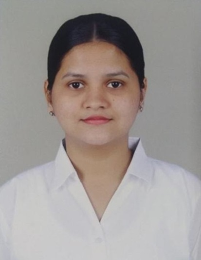

Tanvi Sawant

Summary
I'm a first-year postgraduate student at Vivekanand Education Society’s Institute of Technology in Chembur, Mumbai, currently pursuing a Master's in Computer Application.
My current goal is to secure an entry-level position as a Junior Software Developer. I'm passionate about staying up-to-date with the latest technologies and using them to make a meaningful impact.
As a quick learner, I'm always excited to explore new things and grow both personally and professionally. Looking forward to contributing my skills and knowledge to a dynamic team.
Qualification
- Master in Computer Application from Vivekanand Education Society’s Institute of Technology, Chembur, Mumbai, Maharashtra, 2023-2025, (Pursuing)
- Completed B.Sc. Computer Science from Ramniranjan Jhunjhunwala College, Mumbai, Maharashtra, 2020-2023, (9.06 CGPA, A+ Grade)
- Completed 12th (HSC) from K.J. Somaiya College of Science and Commerce, Mumbai, Maharashtra, 2020, (61.23%)
- Completed 10th (SSC) from St. Xavier’s High School, Mumbai, Maharashtra, 2018, (91%)
Technical Skills
- Programming languages: Java (Intermediate), Python (Basic), JavaScript
- Frontend Development: HTML, CSS, Bootstrap
- Backend Development: Node.js, React.js
- Database: MySQL, Oracle, XAMPP Server (Basics), MongoDB (Basics)
- Operating Systems: Linux (basic commands), Windows
- Major subjects: DBMS, Operating Systems, Computer Networks
Training and Certifications
Experience and Projects
- Internships:
- Projects:
- #Gharguti – Home cooked meal service website | Graduation project
- Deploying static web app on Azure cloud | Future Ready Talent internship project.
- Creating virtual workspace for Robotics developers in AWS | Internship Studio internship project.
- “HomeMate – All in one Home Services” android application | working on project.
Achievements:
- Scored 98.09 percentile in MAH-MCA-CET entrance examination 2023
- Scored 9.76 SGPI in the First Semester of MCA in January 2024
- Scored 9.88 SGPI in the Second Semester of MCA in May 2024
- Participated in and won the Tug of War game at Sphurti Sports event conducted in our college
Other
© Tanvi Sawant. All rights reserved.
{kind=link}
{kind=link}
{kind=link}